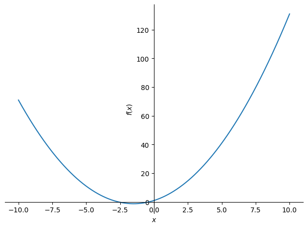

Further information¶
How can we plot a function¶
It is possible to plot a function using sympy using the sympy.plot function:
Tip
sympy.plot(expression)
So for example, here is a plot of \(f(x)=x^2 + 3x + 1\):
import sympy as sym
x = sym.Symbol("x")
sym.plot(x ** 2 + 3 * x + 1)

<sympy.plotting.plot.Plot at 0x7f20b837e850>
It is possible to specify the x limits and combine it with other plots:
sym.plot(x ** 2 + 3 * x + 1, xlim=(-5, 5))
<sympy.plotting.plot.Plot at 0x7f2096256430>
This plotting solution is fine it you want to take a look at a function
quickly but it is not recommended. The main library for plotting is called
matplotlib and Matplotlib covers this.
Here is the
sympydocumentation for plotting: https://docs.sympy.org/latest/modules/plotting.htmlHere is the official
matplotlibdocumentation: https://matplotlib.org